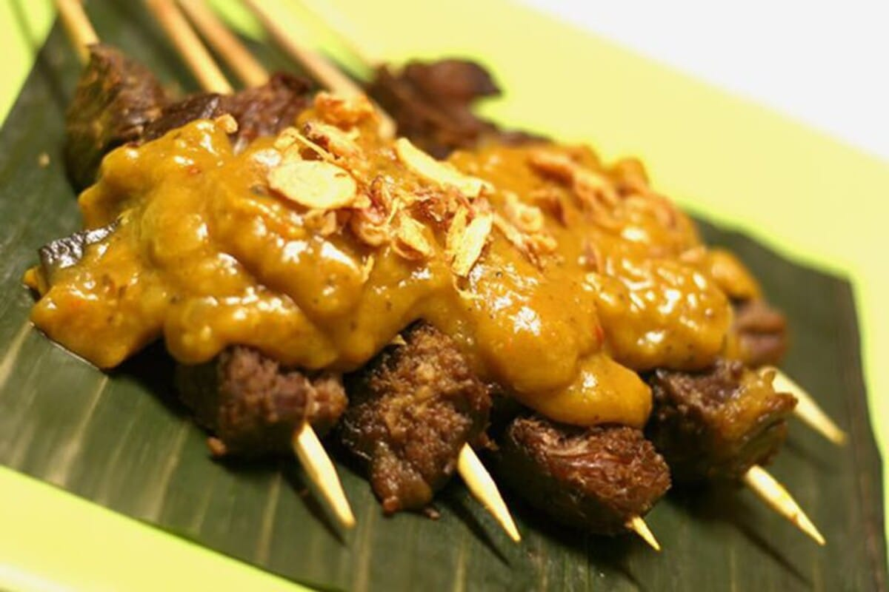

Satay Padang Recipe
- Bring 1.5 liter of water to a boil and then add the tongue (I used beef in this step-by-step because the tongue wasn’t available at the time) and boil for 15 minutes under medium heat.
- Save the cooking liquid
- Remove the tongue/beef and let it rest for 10 minutes on a cutting board
- And do whatever you think is alright to make this dish
- Eat your food proudly :D
